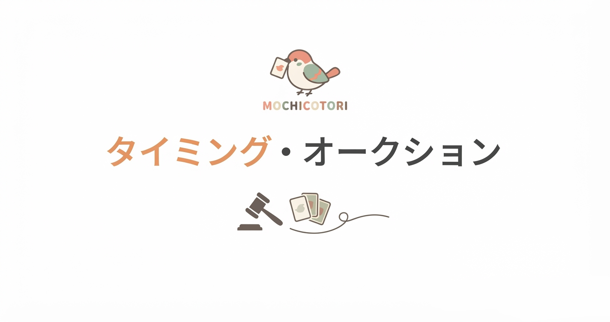
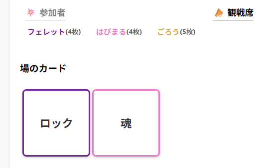
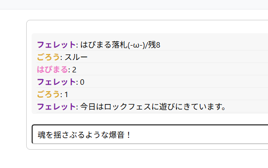

「タイミング・オークション」というゲームを作ったので紹介しますᐠ( ᐢ ᵕ ᐢ )ᐟ
みんなで一つの物語を作るゲームで、協力は必須だけど、いいタイミングを取りに行ったり物語への貢献で競い合う。このサイトのストーリーモードを使ってプレイできるから、その説明も併記しよう。デッキもあげるʕ•ᴥ•ʔつ🃏
プレイ人数：3人以上 / プレイ時間：4人＋手札5枚で1時間程度
ワードカードを5枚ずつ、軍資金を10点ずつ配られる。
ターンプレイヤーからカードを提出すると同時にそのワードを使った一文を提出します。そうしたら、1人飛ばしてその次のプレイヤーから、軍資金残高を最大として、ターンを競り落とすために入札していきます(本来ターンがもらえるはずの人を競り順の最後に置く)。最後に入札した人に誰も上乗せせず返ってきたら、その人が落札者。落札しなければ入札者が実際にお金を払う必要はなく、落札者のみターンの対価として落札額を消費します。
誰も入札しなかったら、そのまま次のプレイヤーのターンになります。この競りには、生き残っている全てのプレイヤーが参加できます。競りの結果誰かのターンが飛ばされても、ターンは基本的にターンプレイヤーからその次の人に進行します。飛ばされた人のターンは戻ってきません。
物語の展開やワードの使い方に無理があったり、誰かを傷つけるような不適切な内容だと思ったら、他のプレイヤーは却下提案できます。ターンプレイヤー以外の全員がそれに賛成すると、その一文は無効になり、そのプレイヤーは脱落になります(すでに脱落している人も却下提案・賛否に参加できます)。
生き残っている人全員の手札がなくなったらゲーム終了。脱落した人も含め、全員が投票権を1つもっています。自分以外の生き残ったプレイヤーのワードの中から、いちばん物語のクオリティに貢献したと思うものを一つずつ選び投票。選ばれた回数が多いプレイヤーの勝ち！同点の場合、軍資金を多く残している人の勝ち！
オプション
・最初のターンプレイヤーをオークションで決めるのもアリ！ここでは各自手札を確認してから、入札金額を一斉に出します。最高入札者が残って、1人になるか10点になるまで続けます。10点になった場合はその中からランダムに落札者を決めてスタート！
・人数増えるほど手札5枚でやるの重くなっていくから、5人くらいから減らして調整しよう。ガッツリ遊びたいか軽めでいいかにもよりけり ᴗ ̫ ᴗ
参加者欄の左から右にターン進行するとわかりやすい。ゲーム開始ボタンを押すと、席順がランダムになるからね。
画像では、フェレットが最初のターン、「ロック」カードと「今日はロックフェスに遊びにきています。」という一文を提出。ここから続けたい人を、はぴまるを飛ばしてごろうから聞いていきます。
オークションのターンでは、ごろうが1点を投じ、フェレットはスルー。はぴまるが2点に上乗せしたけれど、ごろうは乗っかってこず、はぴまるが落札者に。もしごろうもフェレットも入札しなければそのままはぴまるのターンだったんだけど、ごろうが入札した時点で、はぴまるは自分のターンを取り戻すためにオークションを戦わなければいけなくなりました。

はぴまるは「魂」カードと「魂を揺さぶるような爆音！」を提出。そしてまたそこから続けたいかどうかを今度はフェレットから聞いていきます(オークションのターン)。
こんな感じで「カードと一文提出のターン」と「オークションのターン」を交互に繰り返していくというわけです。
投票はいいねをオンにしていっせーので♥をつけるのがおすすめ。リザルト画面でいいね獲得欄を見ると順位が分かりやすいよ。最後に出来た文章をまとめて品評しやすくしよう。

よろしく こんなこと それから 必ず とはいえ にもかかわらず 解釈 かもしれない どことなく 似ている する度 とてつもなく 頼りになる 気がする どこからともなく とんでもない ついている ツインテール どうして はじまった そのまま おかげで というからには しまった わかった なくなった 時は 今まで はかり知れない セミ あれもこれも 何かがおかしい よくわからない 突然 あみだくじ おばあちゃん 弟に 餃子 猛スピードで 全国から ぼんやり 図書館 ジャガイモ 爆発 犬の散歩 たぬき 外国人観光客 元カレ 小動物 コンビニ コーヒー バナナ ガチガチ ざわざわ キンキン ペラペラ スペース バグ マウス カード カット ソフト モデル ポイント ロック 流れ 落ち 頭 腕 全体 歩道橋 事故物件 新幹線 紫陽花 河川敷 高架下 カジュアル 繁盛 フレネミー 冷笑 ブーメラン 天の川 色の SNS 歌ってみた 尊い 儚い AI アプリで 映え 笑顔 すぎて エモ チル バズ ミーム 太陽 クジラ 豪華客船 行方不明 看板 帰 トランペット 純粋に 嬉しい 元気 ちょっと待って 記念に 美味しい 大丈夫 しょうがないね まずいですよ 懐かしい 味がする 非常に かっこいい 魔法で いい匂い バカみたい 約束 魂 自由 理由もなく 嘘つき 酔っ払 圧倒的 正気 幸せ 仲直り 嫉妬 スパイス 一石二鳥 パラダイス 故郷の 聞こえ 落書き 直感 大人 ドキドキ 素敵な 素直に 電話 先生が 好き 可愛い ゲーム 半強制的に おしゃれ 眼鏡 財布 ブランド アイコン コスメ 笑い コメント お前さん ねえねえ プレゼント 世知辛い 大変 遅く 遠い 例の やっぱり ヤバい わけがない 幼馴染 娘 ほんの些細な 総じて この世の 探偵 静かに 苦し紛れに ぎこちない だんだん強く やりがい リーダー メイン 登録 散歩 声は 生きる カーテン 洗濯物 向かった グロテスクな 洋服 始末 とどまって 全く そのもので 伝説 無表情 こめかみ 2階 カワウソ ほうれん草 不思議 1000万 ボブ たしかに それほどでもない あります 節約 食中毒 もちろん 隣り合わせ 危機一髪 爆誕 正義 いけすかない 市役所 コンセント ノック バター キーホルダー キャラクター ポエム 葛藤 することさえ どうしよう ことごとく 突き刺さった 恋愛 感情 見習って 一生懸命 見る影もない 救急隊員 弁護士 エクレア 輝き やらかし いやらしい ソクラテス 金星 化学反応 背徳的な 飲み干し とも言い切れない ヒーロー 伸び縮み ここだけの話 引き継 残業 高校 赤ちゃん バイト先 不審者 七味唐辛子 酒瓶 タイル タトゥー ニュース 線香花火 右から左 の野望 サイバー攻撃 マンボー ラスボス マニアの フォーク 襟足 誇張 何でやねん！ そんなの関係ねえ 本格 ぶっちゃけ 安全 ベランダ 修繕工事 聖地 ゴスロリ ご満悦 有頂天 特有の 罠 嗅覚 鋭い 非常口 充電 モニター プレイ バイク 汎用性 紫外線 超音波 天地無用 切り抜 意味不明 手入れ 気のせい 盛りすぎ 厚かましい お土産 一発 マスク くわばら 船長 写真を撮 ヒント ドッキリ アイス コントローラー 亡き王女のため 合いびき肉 猫である 大冒険 異議あり 引っ込み思案 エンターテイナー 丸く収まった 誰かしら おじさん パイプ 強欲な 使い勝手 ジェネギャ 尖った 寝耳に水 きっかけ なすすべもなく かろうじて あまい